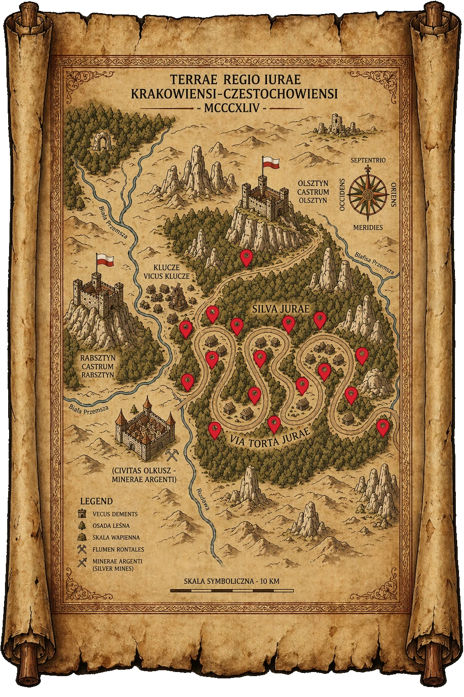

Czym są Chatynki?
To malutkie, tajemnicze leśne domki pełne magii i historii.
To miejsce, gdzie baśnie stają się rzeczywistością. W ukrytych zakamarkach natury, czekają na Ciebie malutkie chatynki – domy prawdziwych elfów. Każda z nich kryje w sobie niezwykłą historię i mądrość jej mieszkańca, ukrytą w magicznej opowieści.
To malutkie, tajemnicze leśne domki pełne magii i historii.
Na Elfa możesz trafić w każdej chwili. Jeśli chcesz ich poszukać, otwórz baśniową mapę.
To Elfy. Każdy z nich ma nam do powiedzenia swoją historię. Bardzo ważną.
Zeskanuj kod QR, który znajduje się na tabliczce w jej pobliżu, albo wpisz tajny 4-cyfrowy kod.
Baśniowa mapa lasu. Kamienne ścieżki wiodące spomiędzy drzew prowadzą do Chatynek. Kliknij chatynkę, by otworzyć nawigację dojazdową, lub przeczytaj jej historię.

Najedź na chatynkę, aby zobaczyć jej nazwę. Kliknij — chatynka powiększy się, a po chwili otworzy się okno z opisem i nawigacją.
Poszukiwaczu, jeśli znalazłeś Chatynkę, wpisz tajny czterocyfrowy kod z tabliczki i zobacz, jak dzieje się magia.